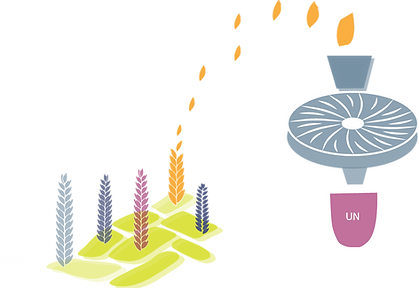
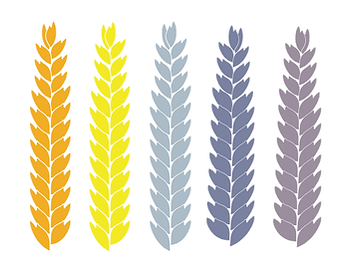

Çarşamba
11:00-19:00
Cumartesi
10:00-18:00
AÇIK
ÖN SİPARİŞ İLE
EKMEĞİMİZİ NASIL ÜRETİYORUZ?
HER ŞEY TOHUMLA BAŞLIYOR!
Ekmeğimizi eski ve yerel buğdayların taze olarak öğütülmüş unlarından üretiyoruz.
Seçtiğimiz buğdayların her birinin bir hikayesi, kendine has tadı ve özellikleri var.
Yerel çeşitliliğin sürmesi için, yerel buğdaylarla çalışmanın önemli olduğunu biliyoruz.
TAŞ DEĞİRMENDE ÖĞÜTÜYORUZ
Tam buğday unlarımızı kendi taş değirmenimizde öğütüyoruz.
Tam buğday unun, beyaz una göre daha besleyici ve doyurucu olduğunu; lif, mineral ve vitaminlerin, buğdayın rüşeym ve kepek kısmında bulunduğunu biliyoruz.


ZEHİR KULLANMADAN YETİŞTİRİYORUZ
Buğdaylarımızı kendimiz yetiştiriyoruz ve ot-böcek öldürücü kimyasallar kullanmıyoruz çünkü sağlıklı tohumların ve sağlıklı toprağın, sürdürülebilir bir tarımın tek yolu olduğunu düşünüyoruz.